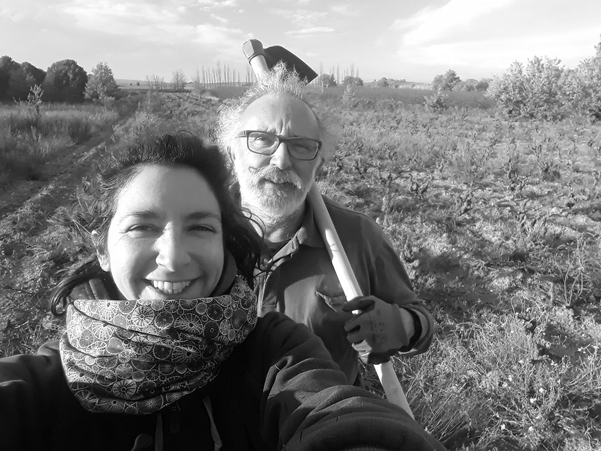

Domaine du Lendemain
Vigneronne en Roussillon & Herbaliste
Histoire
J'ai laissé enfin s'exprimer le gène familial de vigneron en 2018 avec la création du Domaine du Lendemain. En 2017, je prélevais déjà du raisin sur le domaine de mon père pour démarrer de futures cuvées puis j'ai eu l'opportunité de sauver 2 ha de très vieilles vignes de Grenache gris et blanc plantées en 1900.
En 2019, 3 ha de Carignan, Lledoner pelut et un brin de Muscat petits grains viennent compléter l'encépagement. Les premières cuvées Jeune Pousse 18 et Petit Bourgeon 19 voient le jour, des noms inspirés de la phytothérapie et synonymes de régénérescence.
En 2020, mon père Bruno Ribière me rejoint après 30 ans de pratique sur son domaine, partageant la même envie de faire des vins libres, des vins qui nous ressemblent. Aujourd'hui, 8 hectares sont en production avec des rendements faibles mais riches en personnalité.
Issue d'une famille où l'on travaille la terre depuis plusieurs générations, j'ai appris très tôt l'importance des cycles lunaires, des plantes, des minéraux et de l'observation. Diplômée Herbaliste en 2020 après 3 ans d'école, j'ai également développé une petite distillerie d'huiles essentielles et d'hydrolats.
Préserver les vieilles vignes, replanter des friches familiales, créer des haies nourricières… Le Domaine du Lendemain est un travail d'héritage, de soin et de transmission.
Terroirs
Situé en Roussillon, à 15 km au sud de Perpignan, le domaine s'étend sur le terroir des Aspres, un paysage où la chaîne pyrénéenne rencontre la Méditerranée. Collines verdoyantes, terre rouge et ocre : ce décor unique façonne des vins de caractère.
Les sols y sont variés : limono-argileux, argilo-caillouteux, schistes, quartz, calcaire… Les terrasses alluviales pyrénéennes apportent fraîcheur et pureté.
La tramontane, vent emblématique de la région, assainit et protège les vignes tout au long de l'année. Un climat sec, lumineux, venteux : les conditions idéales pour cultiver des cépages typiques du Roussillon.
Cépages
Le domaine cultive notamment du Grenache gris et blanc planté en 1900, du Carignan, du Lledoner pelut, de la Syrah, du Muscat petits grains et du Mataro. Des cépages historiques, enracinés dans le patrimoine catalan.
Engagements
Le travail de la vigne privilégie l'observation et le respect du vivant : sols couverts, enherbement maîtrisé, tisanes de plantes, huiles essentielles, apports de basalte riche en magnésium…
Les vendanges sont manuelles, les vinifications se font naturellement, par gravité, avec une hygiène rigoureuse et un suivi sensoriel constant. Chaque millésime est unique.
Contact
Pour toute question, visite ou demande d'information :
Réserver
Retrouvez toutes les expériences et possibilités de réservation proposées par le Domaine du Lendemain sur Viny'aquí.